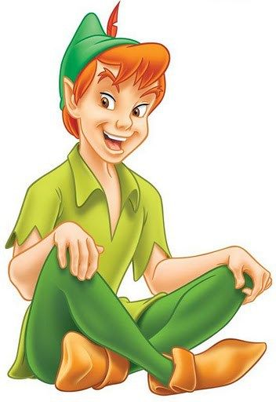

PETER PAN
INICI
HISTÒRIA
A les afores de la ciutat de Londres, viu una familia amb tres germans: Wendy, Juan i Miguel. Wendy sempre li explicava històries als seus germans, la majoria tractaven sobre Peter Pan i, un dia, aquestes històries es van fer realitat.
Fent salts d'alegria, els nens van cridar:
- És Peter Pan i Campaneta!
Després de les salutacions, la fada Campaneta va fer pols màgiques en els tres germans i ells van començar a volar mentre Peter Pan els deia:
- Marxem al País de Mai Mai!
Els cinc nens van volar, van volar, com els estels pel cel. I quan eren a prop del País de Mai Mai, Peter els va assenyalar:

- Allà hi ha el vaixell del temible Capità Garfi.
I va dir a Campaneta:
- Si us plau, Campaneta, porta els meus amiguets a un lloc més abrigat, mentre jo m'allibero d'aquest pirata pesat.
Però Campaneta se sentia gelosa de les atencions que Peter tenia envers la Wendy. Així que va portar els nens a l'illa i va mentir als Nens Perduts dient que Wendy era dolenta. Creient les paraules de la fada, ells van començar a dir coses desagradables a la nena. Encara sort que Peter va arribar a temps per parar-los. I els va preguntar:
- Per què tracten malament la meva amiga Wendy?
I ells van contestar:
- És que Campaneta ens va dir que ella era dolenta.
Peter Pan es va quedar molt enfadat amb Campaneta i li va demanar explicacions. Campaneta, acolorida i penedida, va demanar perdó a Peter i als seus amics pel que va fer. Però l'aventura al País de Mai No acabava de començar mai. Peter va portar els seus amiguets a visitar al llogaret dels indis Sioux. Allà, van trobar el gran cap molt trist i preocupat. I després que Peter Pan li preguntés sobre el que havia passat, el gran cap li va dir:
- Estic molt trist perquè la meva filla Lili va sortir de casa al matí i fins ara no l'hem trobada.
Com que Peter era el que tenia cura de tots a l'illa, es va comprometre amb el Gran Cap de trobar Lili. Amb Wendy, Peter Pan va buscar l'índia per tota l'illa fins que la va trobar presonera del Capità Garfi, a la platja de les sirenes.
Lili estava amarrada a una roca, mentre Garfi l'amenaçava de deixar-la allà fins que la marea pugés, si no li explicava on era la casa de Peter Pan. La petita índia, molt valenta, li contestava que no ho diria. El que posava furiós al Capità. I quan semblava que res no podia salvar-la, de sobte van sentir una veu:
- Eh, Capità Garfi, ets un bacallà, un covard! A veure si t'atreveixes amb mi!
Era Peter Pan, que venia a rescatar la filla del Gran cap indi. Després d'alliberar Lili de les cordes, Peter va començar a lluitar contra Garfi. De sobte, el Capità va començar a sentir el tic tac que tant l'horroritzava.
Era el cocodril que s'acostava deixant Garfi nerviós. Tremolava tant que va acabar caient al mar. I no es va saber mai res més del Capità Garfi.
Peter va tornar a Lili al seu llogaret i el pare de la nena, molt content, no sabia com donar les gràcies a ell. Així que va preparar una gran festa per als seus amiguets, els qui van ballar i van passar molt bé.
Però ja era tard i els nens havien de tornar a casa per dormir. Peter Pan i Campaneta els van acompanyar en el viatge de tornada. I en acomiadar-se, Peter els va dir:
- Encara que creixeu, no perdeu mai la vostra fantasia ni la vostra imaginació. Tornaré per emportar-vos a una nova aventura. Adéu amics!
- Fins després Peter Pan! van cridar els nens mentre es ficaven sota la manteta perquè feia moltíssim fred.
PERSONATGES
- Peter Pan
- Campaneta
- Wendy Darling
- Juan i Miguel
- Capità Garfi
- Lili
El nostre protagonista és un nen que no vol fer-se gran. Viu al Pais de Mai Mai juntament amb la seva companya Campaneta i els seus amics, els Nens Perduts. Sempre intenta fer el bé i salvar als seus amics.
Fidel companya de Peter Pan, l'acompanya a tots llocs. Gracies a la seva "Pols de Fada" pot volar i, a vegades, curar a qui està ferit.
Filla de George i Mary i germana gran de Juan i Miguel, és una de les protagonistes de la història. Ella descobreix la màgia explicant les històries als seus germans. Quan es fa més gran, explica les històries als seus fills.
Fills de George i Mary i germans de la Wendy, s'acompanyen mutuament a aquesta aventura.
Temps enrere, Peter Pan va tallar-li la mà al capità i li va donar d'aliment a un cocodril. A aquest li va agradar tant el sabor que des de llavors segueix al capità a tots llocs. És per això que Garfi es vol vengar de Peter Pan i els seus amics.

Filla del cap dels indis Sioux i princesa del campament que habita al Pais de Mai Mai.